Introduction
mSigPlot creates publication-quality plots for mutational signatures and mutational spectra. It supports single base substitutions (SBS), doublet base substitutions (DBS), and small insertions and deletions (indels) across 10 classification systems.
SBS96 – single base substitutions in trinucleotide context
The 96-channel catalog has one row per trinucleotide mutation
context, organized into 6 mutation classes (C>A, C>G, C>T,
T>A, T>C, T>G). If row names are present they will be checked
agains catalog_row_order.
sbs96_file <- system.file("extdata", "sbs96_example.csv", package = "mSigPlot")
sbs96_df <- read.csv(sbs96_file)
catalog_sbs96 <- data.frame(
sample1 = sbs96_df[, 3],
row.names = catalog_row_order()$SBS96
)
plot_SBS96(catalog_sbs96, plot_title = "HepG2 sample -- SBS96")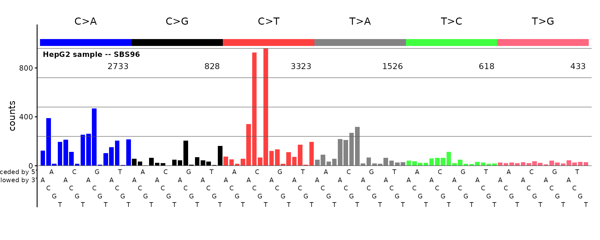
Row names (or for a numeric vector, names) are not required.
If there are no names or row names be sure the rows are in the order expected for plotting.
plot_SBS96(sample(sbs96_df[ ,3, drop = TRUE], replace = FALSE),
plot_title = "HepG2 sample, mixed up row order -- SBS96")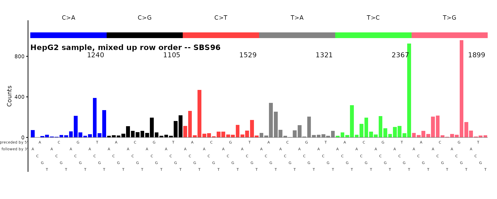
The plot above will be unrecognizable.
Optional styling: horizontal gridlines and an external title
By default plot_title is placed inside the plot area.
Set title_outside_plot = TRUE to use a standard ggplot
title above the panel instead. Set grid = TRUE to add
horizontal reference lines at the y-axis breaks. These options are
independent and are supported by all bar-plot functions.
plot_SBS96(catalog_sbs96,
plot_title = "HepG2 -- SBS96 (grid + external title)",
grid = TRUE,
title_outside_plot = TRUE)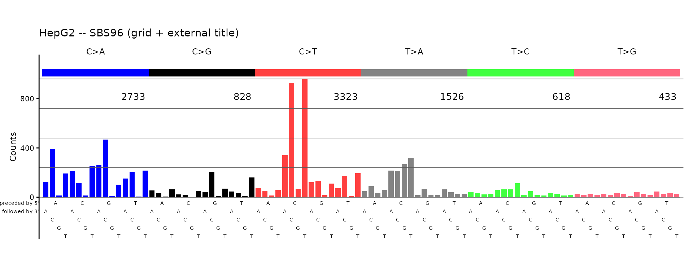
ID83 – COSMIC indel classification
The 83-channel indel catalog uses the COSMIC classification with single-base and multi-base deletions, insertions, and microhomology deletions.
id83_file <- system.file("extdata", "id83_cosmic_v3.5.tsv", package = "mSigPlot")
id83_sigs <- read.table(id83_file, header = TRUE, sep = "\t",
row.names = 1, check.names = FALSE)
plot_ID83(id83_sigs[, "ID1", drop = FALSE], plot_title = "COSMIC ID1 signature")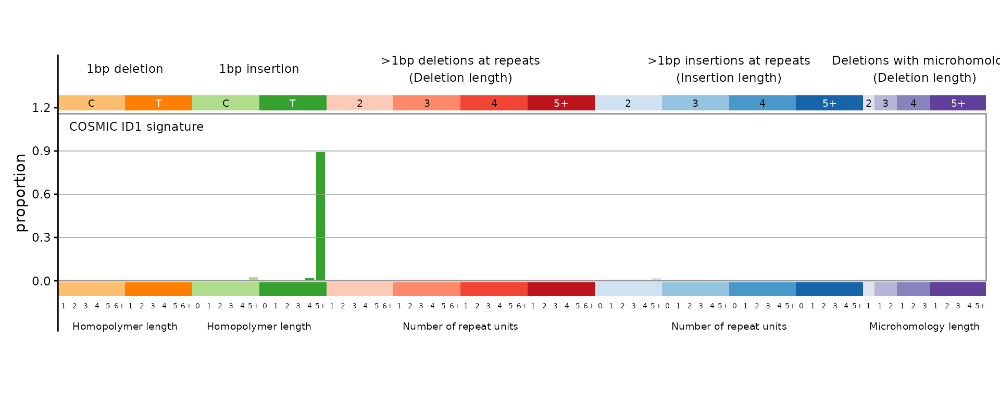
ID89 – 89-channel indel classification
The 89-channel system (Koh et al.) provides a finer decomposition of indel types, including optional complex indels.
id89_file <- system.file("extdata", "type89_liu_et_al_sigs.tsv",
package = "mSigPlot")
id89_sigs <- read.table(id89_file, header = TRUE, sep = "\t",
row.names = 1, check.names = FALSE)
plot_ID89(id89_sigs[, 1, drop = FALSE], plot_title = "ID89 signature")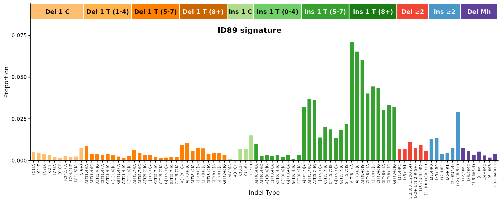
One can add arrows to label the tallest peaks for bar-chart-like plots:
plot_ID89(id89_sigs[, 1, drop = FALSE], plot_title = "ID89 signature",
num_peak_labels = 5)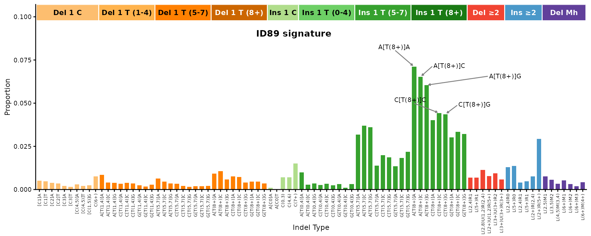
ID476 – 476-channel indel classification
The 476-channel system adds flanking base context to the indel classification, producing a detailed profile.
id476_file <- system.file("extdata", "type476_liu_et_al_sigs.tsv",
package = "mSigPlot")
id476_sigs <- read.table(id476_file, header = TRUE, sep = "\t",
row.names = 1, check.names = FALSE)
plot_ID476(id476_sigs[, 1, drop = FALSE], plot_title = "ID476 signature")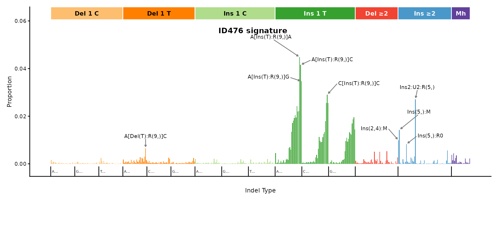
ID476 right panel
The right portion of the 476-channel profile (positions 343–476) can be plotted separately for a closer look at multi-base indels.
plot_ID476_right(id476_sigs[, 1, drop = FALSE],
plot_title = "ID476 right panel")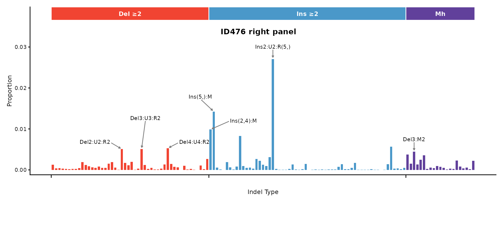
DBS78 – doublet base substitutions
The 78-channel DBS catalog covers all dinucleotide substitution classes, organized into 10 reference dinucleotide groups.
dbs78_file <- system.file("extdata", "dbs78_example.csv", package = "mSigPlot")
dbs78_df <- read.csv(dbs78_file)
catalog_dbs78 <- data.frame(
sample1 = dbs78_df[, 3],
row.names = paste0(dbs78_df$Ref, dbs78_df$Var)
)
plot_DBS78(catalog_dbs78, plot_title = "HepG2 sample -- DBS78")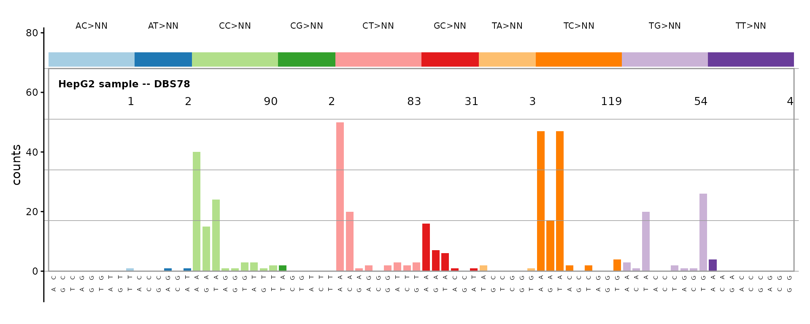
SBS192 – SBS with transcription strand
The 192-channel catalog pairs each of the 96 trinucleotide contexts with transcribed and untranscribed strand information.
sbs192_file <- system.file("extdata", "regress.cat.sbs.192.csv",
package = "mSigPlot")
sbs192_df <- read.csv(sbs192_file)
catalog_sbs192 <- data.frame(
sample1 = sbs192_df[, 4],
row.names = catalog_row_order()$SBS192
)
plot_SBS192(catalog_sbs192, plot_title = "HepG2 -- SBS192")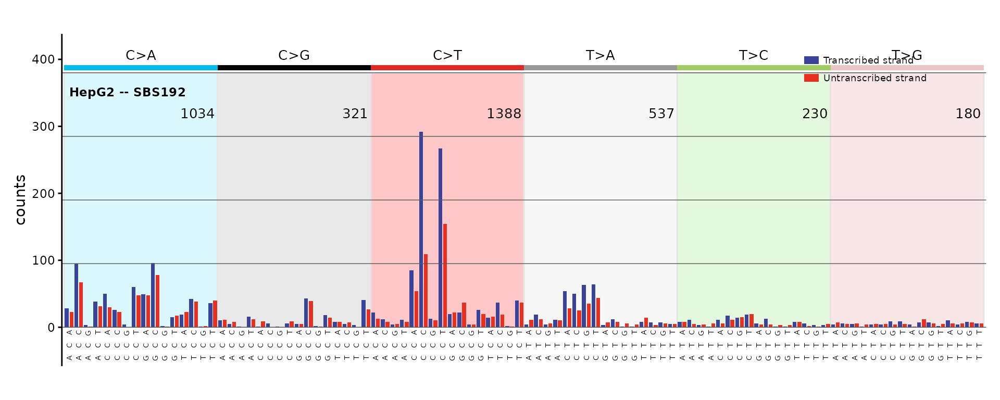
DBS144 – DBS with transcription strand
The 144-channel DBS catalog adds transcription strand context to the 78 dinucleotide substitution types.
dbs144_file <- system.file("extdata", "regress.cat.dbs.144.csv",
package = "mSigPlot")
dbs144_df <- read.csv(dbs144_file)
catalog_dbs144 <- data.frame(
sample1 = dbs144_df[, 3],
row.names = paste0(dbs144_df$Ref, dbs144_df$Var)
)
plot_DBS144(catalog_dbs144, plot_title = "HepG2 -- DBS144")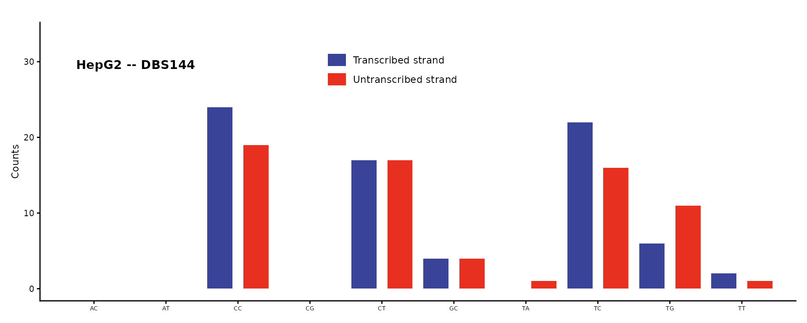
DBS136 – DBS heatmap
The 136-channel DBS catalog is displayed as a heatmap of 10 panels (4x4 grids) rather than a bar chart.
dbs136_file <- system.file("extdata", "regress.cat.dbs.136.csv",
package = "mSigPlot")
dbs136_df <- read.csv(dbs136_file, row.names = 1)
plot_DBS136(dbs136_df[, 1, drop = FALSE], plot_title = "HepG2 -- DBS136")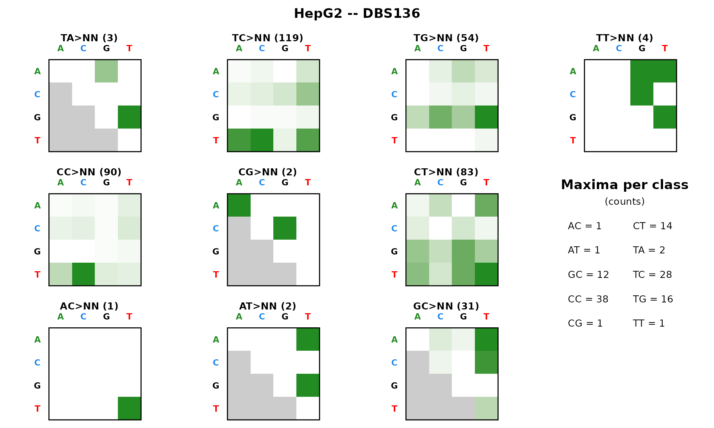
SBS1536 – SBS pentanucleotide context
The 1536-channel catalog extends trinucleotide context to pentanucleotide context, displayed as a faceted heatmap.
sbs1536_file <- system.file("extdata", "regress.cat.sbs.1536.csv",
package = "mSigPlot")
sbs1536_df <- read.csv(sbs1536_file)
catalog_sbs1536 <- data.frame(
sample1 = sbs1536_df[, 3],
row.names = catalog_row_order()$SBS1536
)
plot_SBS1536(catalog_sbs1536, plot_title = "HepG2 -- SBS1536")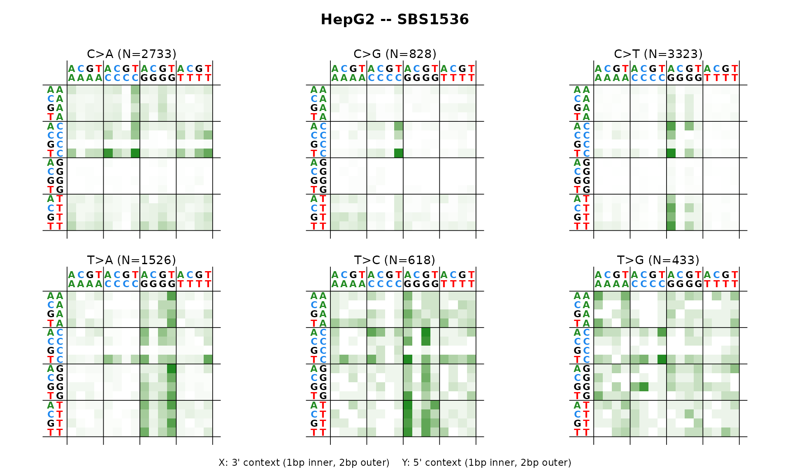
SBS288 – SBS with three-strand context
The 288-channel catalog adds three strand categories (transcribed, untranscribed, non-transcribed/intergenic) to the 96 SBS channels.
sbs288_file <- system.file("extdata", "SBS288_De-Novo_Signatures.txt",
package = "mSigPlot")
sbs288_df <- read.table(sbs288_file, header = TRUE, sep = "\t",
row.names = 1, check.names = FALSE)
plot_SBS288(sbs288_df[, 1, drop = FALSE], plot_title = "SBS288A")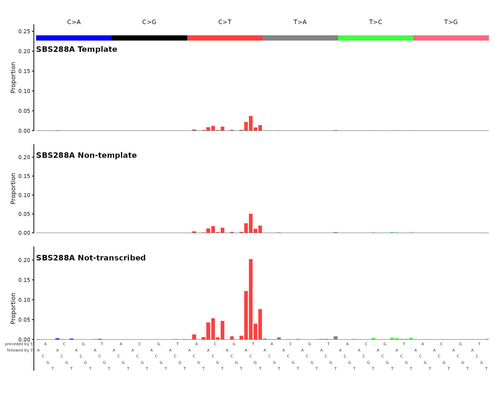
ID166 – indel genic/intergenic
The 166-channel indel catalog adds genic/intergenic context to the 83-channel COSMIC classification.
set.seed(42)
sig_id166 <- runif(166)
sig_id166 <- sig_id166 / sum(sig_id166)
names(sig_id166) <- catalog_row_order()$ID166
plot_ID166(sig_id166, plot_title = "Simulated ID166 signature")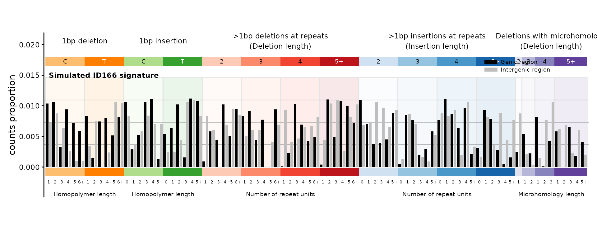
SBS12 – strand bias summary
The SBS12 plot collapses a 192-channel catalog to 12 bars (6 mutation classes x 2 strands) to visualize transcription strand bias.
plot_SBS12(catalog_sbs192, plot_title = "HepG2 -- SBS12 strand bias")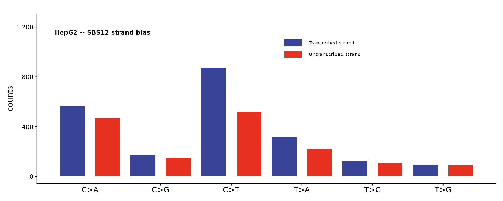
Auto-dispatch with plot_guess()
If you don’t know (or don’t want to specify) the catalog type,
plot_guess() detects it from the number of rows:
plot_guess(catalog_sbs96, plot_title = "Auto-detected SBS96")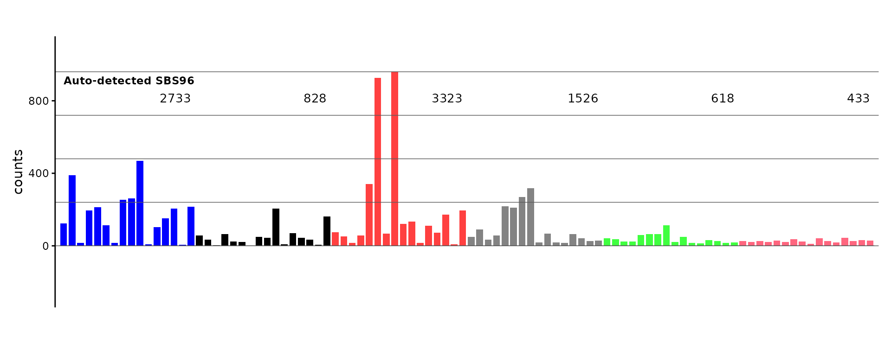
Multi-sample PDF export
Every plot function has a _pdf() variant that writes a
multi-page PDF with 5 plots per page. The auto-dispatch version is
plot_guess_pdf():
sbs96_mat <- as.matrix(sbs96_df[, 3:6])
rownames(sbs96_mat) <- catalog_row_order()$SBS96
colnames(sbs96_mat) <- paste0("Sample_", 1:4)
plot_guess_pdf(sbs96_mat, file.path(tempdir(), "sbs96_samples.pdf"))